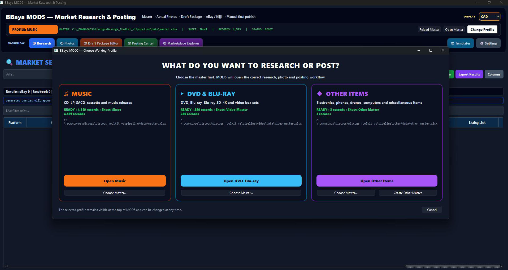
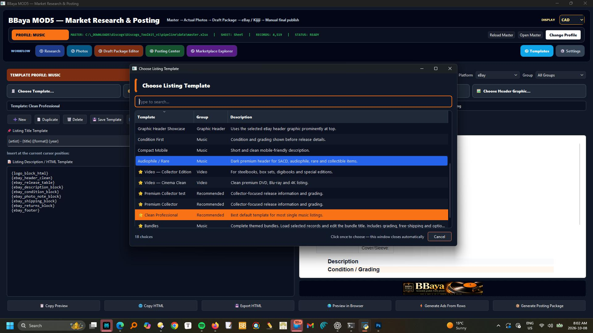
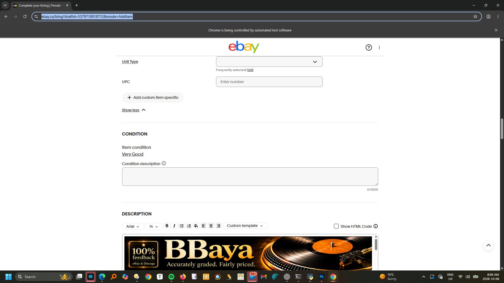

Start from the exact release in the master collection.
MOD5
Market Research & Assisted Posting
Research the price. Prepare the draft. Reuse it across platforms.
MOD5 combines detailed marketplace research with practical listing preparation. Search comparable offers, compare asking prices, keep Discogs Suggested visible as the master pricing reference, and turn the findings into a reusable research report. Prepare a ready-to-post draft once, then reuse its title, description, price and images across multiple platforms. Design and save your own templates for each platform, using HTML where supported, emoji and reusable text blocks.
- Research comparable listings and active asking prices
- Compare marketplace values with Discogs Suggested
- Build a seller-focused pricing view in CAD
- Append the research report to the record or posting package
- Prepare ready-to-post drafts for assisted posting
- Reuse the same listing across multiple platforms
- Design your own platform templates with HTML, emoji and reusable text

Detailed researchSearch the selected release across marketplace sources and inspect comparable listings.
Price with evidenceCompare active offers with Discogs Suggested before deciding the asking price.
Research reportKeep the findings with the record and append them to the seller package.
Ready-to-post draftsPrepare once. Reuse the same title, description, price and images across platforms.
Your platform templatesAdapt saved templates with HTML where supported, emoji and your own text blocks.
Seller stays in controlReview every platform package before the final listing is submitted.
Actual MOD5 screens
From your master collection to a ready-to-post listing.
Follow the draft, template and assisted-posting process below. Select a screenshot to inspect it at full size.
Choose your working profile
Start with music, DVD & Blu-ray, or other items. MOD5 uses the selected master for research, photos and posting.

Prepare the draft
Edit the title, price, description and images. Select your target platforms, run Ready Check and mark the package ready.

Choose and customize a template
Select a listing layout, edit reusable HTML blocks and preview the description. Save your own platform templates for the next listing.

Run assisted posting
Select a ready package and its destination in Posting Center. Use Post / Assist, then track draft, ready and posted status.

Review the listing on eBay
The prepared description appears in the eBay listing editor. Check the remaining fields and approve the final publication yourself.

Research first. Price with confidence.
See the market around the record — not just one isolated number.
Keep Discogs Suggested visible as the central pricing anchor.
Review comparable active listings, condition and asking prices.
Choose a realistic asking price in CAD based on the evidence.
Research
Inspect comparable offers instead of guessing.
MOD5 lets a seller review actual marketplace results around the selected artist, title and release. The workspace keeps source, price, condition, location and listing access together so weak comparisons can be rejected and relevant ones can guide the decision.
COMPARABLE LISTINGSCONDITIONSOURCEASKING PRICE
Price
Use Discogs Suggested as the permanent master reference.
Marketplace prices can vary widely. MOD5 keeps Discogs Suggested visible while the seller compares eBay, Facebook Marketplace and Kijiji results. Missing marketplace values can fall back to the master reference rather than leaving the pricing workflow empty.
DISCOGS SUGGESTEDCAD $MARKET RANGEASKING PRICE
PRICING EVIDENCESelected release
Discogs SuggestedMASTER REFERENCE
eBayACTIVE OFFERS
Facebook MarketplaceLOCAL MARKET
KijijiTORONTO SEARCH
SELLER DECISIONFINAL ASKING PRICE — CAD
MARKET RESEARCH REPORTAttached to the selected record
ReleaseArtist · Title · Format
ReferenceDiscogs Suggested
Sources checkedeBay · Facebook · Kijiji
Recommended rangeSeller-reviewed CAD range
Research notes, comparable links and pricing rationale remain available with the posting package.
Document
Append the research report instead of losing the reasoning.
The research is not a temporary browser exercise. MOD5 preserves the useful findings, links and pricing rationale as a structured report associated with the selected item or its posting package. That makes later review, repricing and listing decisions much easier.
REPORTSOURCE LINKSPRICE RATIONALEPACKAGE HISTORY
Prepare
Create one seller-ready source package, then adapt it for every platform.
Build a ready-to-post draft from the General Package, then reuse it for eBay, Facebook Marketplace and Kijiji. Design a template for each platform: HTML layouts where supported, emoji, your own wording and reusable text blocks. Adapt title length, category and item specifics without rewriting the listing from scratch.
TITLEDESCRIPTIONPRICEIMAGESITEM SPECIFICS
Assisted posting & reusable drafts
One draft. Your templates. Multiple platforms.
Prepare drafts ready to post, apply your saved platform templates, then use assisted browser filling. Review each version and approve the final listing.
Prepare once. Adapt and reuse.
Your listing, designed for each platform.
The complete MOD5 seller workflow
Research. Decide. Prepare. Review. Post.
01SelectChoose the exact release from the master.
→02ResearchCollect comparable marketplace evidence.
→03PriceSet the asking price in CAD.
→04ReportAppend the research findings.
→05PrepareSave ready-to-post drafts with your platform templates.
→06PostRun assisted posting and approve the final listing.
The dedicated seller module
Know the market. Price the record. Prepare every channel from one source.
MOD5 turns research into a documented pricing decision and a coordinated multi-platform posting workflow.